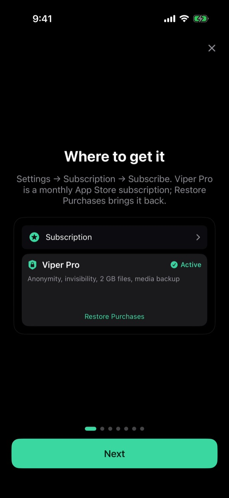

Viper Pro
What it adds and where to get it
Where to get it
Settings → Subscription → Subscribe. Viper Pro is a monthly App Store subscription; Restore Purchases brings it back.

One Apple ID, one account
An Apple ID holds one renewing Viper Pro subscription, and it works on one account: the one that subscribed. Settings → Subscription says On this account there.
Your other accounts
On any other account, Subscription offers Pro for this account for a month. The same Apple ID can buy it for any number of accounts. It does not renew.
Renewing on two accounts
For a renewing subscription on a second account, subscribe with a second Apple ID: say Apple ID X on your iPhone and Apple ID Y on your Mac.
Hidden by the relay
Anon Mode takes you out of Search; your chats keep working. Hide Online Status shows you offline to everyone. The relay checks Apple's signature itself.
Files up to 2 GB
Through the relay a file can be up to 50 MB free, up to 2 GB with Pro, even when they are offline. It waits for them up to 14 days.
Full Chat Backup
Messages and contacts go into the backup for free. With Pro it also carries photos, videos, files, voice and video messages. Only your Account Key opens the file.
Coming (announced, not shipped yet)
Features that run on your device are moving to Free: Save without Logo and the full chat backup with photos, videos and files. What the relay does stays in Viper Pro: Anon Mode, Hide Online Status and big files through the relay. File transfers will also be improved. Until that update ships, the page above describes the app as it is.
Earlier on this blog
From the guide in Viper 1.5.34: Profile → Settings → Help → Guides. All posts